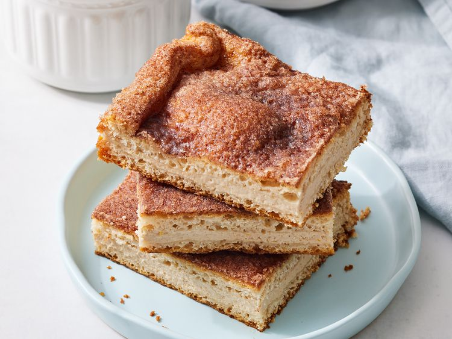

Churro Cheesecake Bars

Description
These churro cheesecake bars are rich, decadent, sweet, and shockingly simple to make.
Ingredients
- Sugar: Start with ½ cup of white sugar.
- Cinnamon: A tablespoon ground cinnamon lends warmth.
- Cream cheese: You’ll need two packages of brown sugar and cinnamon spreadable cream cheese.
- Egg: An egg gives the filling moisture and helps find it together.
- Vanilla: Two teaspoons of vanilla extract add a depth of flavor.
- Orange zest: Orange zest is optional, but it gives the filling welcome brightness.
- Crescent sheets: Refrigerated crescent sheets are the convenient crust.
- Butter: Melted butter adds richness and gives the sugar something to adhere to.
- Cajeta: Cajeta (Mexican caramel) is optional, but it’s the perfect finishing touch.
Steps
- Sprinkle the bottom of a prepared pan with sugar and cinnamon.
- Place a crescent sheet in the pan.
- Make the filling, then spread it over the crescent sheet.
- Top with the remaining crescent sheet, then pour melted butter over the top.
- Sprinkle with the remaining sugar and bake until golden brown.
Back to main page